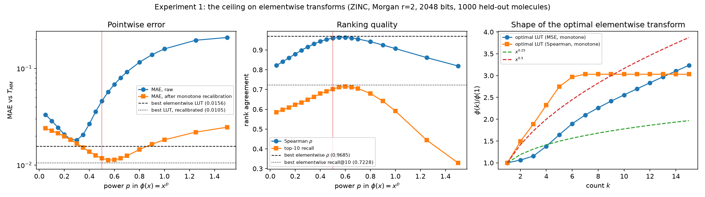

Square-root scaling of count fingerprints: the best elementwise trick, and why it can’t be exact
machine learning
drug discovery
chemistry
Companion to the fpsketch post: an (AI-driven) study of rescaling count fingerprints so that dot-product Tanimoto approximates min-max Tanimoto.
Authors
Claude Fable
Austin Tripp
Published
September 18, 2026
⛅ Medium confidence🤖 AI co-written🔧 Moderate effort🧩 Medium originality🌱 New
CautionAustin’s intro to a ≈100% AI generated post
This post explains an idea that I think is worse than fpsketch, but still worth putting up on the internet in some form, so I wrote up a post with Claude (hence the distinctive AI writing style). Everything below is AI-generated.
1 Introduction
This post is a companion to my post on fpsketch. As I explained in a footnote there, fpsketch came out of a study that started with a different question. In my Tanimoto random features paper (Tripp et al. 2023) I had briefly tried square-root scaling of count fingerprints, so that the fast dot-product Tanimoto similarity would better approximate the standard min-max Tanimoto similarity. When Huber and Pollmann (2026) later reported that log-scaling of counts was often beneficial, I asked Claude to investigate the question properly: what is the best elementwise rescaling, and how close can it get?
The answers turned out to be cleaner than I expected:
Square-root scaling is provably the “right” elementwise idea. It makes the denominators match exactly, and its error is one-sided (it always over-estimates the true similarity).
No elementwise rescaling can be exact, and the whole class has a measurable ceiling. A plain power law already reaches it, so there is no cleverer transform waiting to be found.
Leaving the elementwise class fixes the problem, which is what fpsketch does.
If you only need the recommendation: if you must rescale counts elementwise, use \sqrt{x} (or x^{0.55} if only the ranking of similarities matters). However, most likely you will never be constrained to elementwise rescaling of counts, so in that case use fpsketch.
2 Setup
For non-negative vectors x, x' \in \mathbb{R}^d_{\geq 0}, define the min-max (Jaccard) Tanimoto similarity and the dot-product Tanimoto similarity:
T_{\mathrm{MM}} is the standard similarity for count fingerprints in cheminformatics, and it is what RDKit computes when you call BulkTanimotoSimilarity on count fingerprints. T_{\mathrm{DP}} is far cheaper because a full similarity matrix is one matrix product, and it has an inner-product structure that makes it compatible with sketching and random features (Tripp et al. 2023). The two coincide on binary vectors but not on counts.
The question in this post is:
Is there an elementwise map \varphi: \mathbb{R}_{\geq 0} \to \mathbb{R} (applied coordinate by coordinate) such that T_{\mathrm{DP}}(\varphi(x), \varphi(x')) \approx T_{\mathrm{MM}}(x, x') for count fingerprints?
Two remarks before starting. First, T_{\mathrm{DP}} is invariant to scaling both inputs by the same constant, so we may fix \varphi(1) = 1 without loss of generality. Second, for integer counts, \varphi is nothing more than a lookup table \varphi(1), \varphi(2), \ldots: this is what makes it possible to measure the best possible elementwise transform later on.
3 Theory
3.1 Both similarities have the same functional form
Since \min(a, b) + \max(a, b) = a + b, the denominator of Equation 1 can be rewritten as \sum_i \max(x_i, x'_i) = \sum_i x_i + \sum_i x'_i - \sum_i
\min(x_i, x'_i). Both similarities are therefore instances of the same formula,
F(s) = \frac{s}{a + b - s} \ ,
with an “overlap” term s and “self” terms a, b:
Table 1: The two similarities differ only in how the overlap and self terms are computed.
overlap s
self term a (and likewise b)
T_{\mathrm{MM}}(x, x')
\sum_i \min(x_i, x'_i)
\sum_i x_i = \|x\|_1
T_{\mathrm{DP}}(\varphi(x), \varphi(x'))
\sum_i \varphi(x_i)\varphi(x'_i)
\sum_i \varphi(x_i)^2
F is strictly increasing in s on 0 \leq s < a + b. So matching the two similarities reduces to matching two elementwise quantities:
The transform \varphi(u) = \sqrt{u} satisfies the second condition in Equation 3exactly: \varphi(u)^2 = u, so \|\sqrt{x}\|^2 = \|x\|_1 and the denominators of T_{\mathrm{DP}}(\sqrt{x}, \sqrt{x'}) and T_{\mathrm{MM}}(x, x') share the same a + b. The only remaining mismatch is in the overlap: a geometric mean \sqrt{uv} in place of \min(u, v). This has a clean consequence.
Theorem 1 (Square-root scaling never under-estimates) For all x, x' \in \mathbb{R}^d_{\geq 0},
T_{\mathrm{DP}}(\sqrt{x}, \sqrt{x'}) \geq T_{\mathrm{MM}}(x, x') \ ,
with equality if and only if every coordinate has x_i = x'_i or \min(x_i, x'_i) = 0.
NoteProof
By the AM-GM inequality, \sqrt{uv} \geq \min(u, v) for u, v \geq 0, with equality iff u = v or \min(u, v) = 0. Summing over coordinates, s_{\mathrm{DP}} := \sum_i \sqrt{x_i x'_i} \geq \sum_i \min(x_i, x'_i) =:
s_{\mathrm{MM}}. Both similarities equal F(s) = s / (A - s) with the sameA = \sum_i x_i + \sum_i x'_i (because \varphi(u)^2 = u), and F is strictly increasing. Hence T_{\mathrm{DP}}(\sqrt{x}, \sqrt{x'}) = F(s_{\mathrm{DP}})
\geq F(s_{\mathrm{MM}}) = T_{\mathrm{MM}}(x, x'), with equality iff s_{\mathrm{DP}} = s_{\mathrm{MM}}, i.e. iff the AM-GM equality condition holds in every coordinate. \blacksquare
There is also a pleasant distance interpretation. Using \sum \max - \sum \min
= \|x - x'\|_1, and writing H^2(x, x') = \sum_i (\sqrt{x_i} - \sqrt{x'_i})^2 for the squared Hellinger distance,
Square-root scaling swaps the pair (L_1 distance, min) for the pair (squared Hellinger distance, geometric mean), and changes nothing else.
Empirically, on the ZINC Morgan fingerprints described in Section 4, the mean gap T_{\mathrm{DP}}(\sqrt{x}, \sqrt{x'}) - T_{\mathrm{MM}}(x, x') is +0.046, and the mean absolute error is also 0.046: the two agree to all printed digits, which is the numerical signature of a purely one-sided error. The bound was also checked to be tight on exactly the pairs Theorem 1 predicts.
3.3 No elementwise transform is exact, even in one dimension
Theorem 2 (Impossibility) There is no function \varphi: \mathbb{Z}_{\geq 0} \to \mathbb{R} such that T_{\mathrm{DP}}(\varphi(x), \varphi(x')) = T_{\mathrm{MM}}(x, x') for all non-negative integer vectors x, x', even when d = 1.
NoteProof
Take d = 1 and write a = \varphi(1), b = \varphi(2), c = \varphi(4). None of these can be 0 (otherwise the corresponding T_{\mathrm{DP}} would be 0 while T_{\mathrm{MM}} is not). In one dimension, with t = \varphi(v) /
\varphi(u),
T_{\mathrm{MM}}(1, 2) = 1/2 forces t / (1 - t + t^2) = 1/2, i.e. t^2 - 3t
+ 1 = 0, so b / a \in \{\tau, 1/\tau\} with \tau = (3 + \sqrt{5}) / 2
\approx 2.618.
T_{\mathrm{MM}}(2, 4) = 1/2 forces c / b \in \{\tau, 1/\tau\} by the same computation.
Therefore c / a = (b / a)(c / b) \in \{\tau^2, 1, \tau^{-2}\} \approx
\{6.854, 1, 0.146\}.
But T_{\mathrm{MM}}(1, 4) = 1/4 forces s / (1 - s + s^2) = 1/4 with s = c
/ a, i.e. s^2 - 5s + 1 = 0, so c / a \in \{(5 \pm \sqrt{21}) / 2\} \approx
\{4.791, 0.209\}.
The two requirements on c / a are incompatible. \blacksquare
Note that the proof assumes nothing about \varphi (no monotonicity, no continuity) and only uses the counts \{1, 2, 4\}, which occur constantly in real fingerprints. Any elementwise transform can therefore only ever approximateT_{\mathrm{MM}}; the experiment below measures how close the best one gets.
3.4 Why, and how to sidestep it
The structural reason is a mismatch in smoothness. The distance term of T_{\mathrm{MM}} is \|x - x'\|_1, which has a kink: near u = v it grows like |u - v|. Any differentiable \varphi produces the distance term \sum_i
(\varphi(x_i) - \varphi(x'_i))^2, which grows like \varphi'(u)^2 (u - v)^2, i.e. to second order. A smooth elementwise transform is necessarily too flat exactly where T_{\mathrm{MM}} is sharpest, and no choice of \varphi fixes it, because the mismatch is in the order of contact rather than the scale. This predicts that the error of any elementwise transform concentrates on pairs sharing features at nearby but unequal counts.
The fix is to leave the elementwise class. \min(u, v) is a positive-definite kernel (the covariance of Brownian motion) and for integer counts it has a finite feature map:
Define the unary (thermometer) encoding \psi(x)_{i, k} = \mathbb{I}[x_i >
k]. Then \langle \psi(x), \psi(x') \rangle = \sum_i \min(x_i, x'_i) and \|\psi(x)\|^2 = \sum_i x_i, both exactly, so both conditions in Equation 3 are met at once:
Theorem 3 (Unary encoding is exact)T_{\mathrm{DP}}(\psi(x), \psi(x')) = T_{\mathrm{MM}}(x, x') identically, for every pair of non-negative integer vectors.
The proof is immediate from Table 1: numerator and denominator agree term by term. The price is dimension: \psi(x) has d \times (\max \text{count}) coordinates. However, \psi(x) is binary and sparse, with exactly \sum_i x_i non-zeros (about 46% more than the original fingerprint on the data below), and that is exactly the situation in which a CountSketch (Charikar et al. 2002) is cheap and unbiased. That combination is what fpsketch implements; the unary encoding is explained there too.
4 Experiment: the ceiling on elementwise transforms
Setup. 2000 distinct molecules were sampled from ZINC250k, and Morgan count fingerprints were computed with RDKit at radius 2 (radius 3 was also run and agrees throughout; only radius 2 is reported here) and folded to 2048 dimensions, RDKit’s default. Any fitting used 1000 “training” molecules; every number below is computed on the other 1000 held-out molecules, i.e. on about 500,000 pairs. The reference is the exact T_{\mathrm{MM}} of these fingerprints.
Metrics. Mean absolute error (MAE) against T_{\mathrm{MM}}; MAE after a monotone recalibration (an isotonic regression fitted on training pairs and applied to held-out pairs, which separates ordering error from calibration error); Spearman rank correlation \rho between approximate and true similarities; and top-10 neighbour recall (the average overlap between each molecule’s ten nearest neighbours under the true and approximate similarity).
Transforms. Powers x^p for p \in [0.05, 1.5], binary \mathbb{I}[x >
0], \sqrt{\log(1 + \alpha x)} for several \alpha, and hard and soft saturations \sqrt{\min(x, c)} and \sqrt{x / (1 + x / c)}. In addition, since counts here never exceed 15, a free-form lookup table\varphi(1), \ldots,
\varphi(15) was fitted directly on training pairs (with \varphi(1) = 1) to minimise MAE or to maximise Spearman \rho. The fitted lookup table is an upper bound on the entire elementwise class: no elementwise transform can do better on the training objective, and the train/held-out gap was about 0.0005, so the held-out numbers are representative.
4.1 Results
Table 2: Held-out accuracy of T_{\mathrm{DP}} on transformed fingerprints as an approximation of T_{\mathrm{MM}} (ZINC, Morgan radius 2, 2048 bits, 1000 held-out molecules). The lookup-table row reports the best value in each column across the MAE- and \rho-optimised tables.
transform
MAE
MAE after recalibration
Spearman \rho
recall@10
raw counts (\varphi(x) = x)
0.159
0.018
0.907
0.59
binary
0.038
0.025
0.803
0.58
x^{0.3} (best raw MAE)
0.018
0.017
0.916
0.65
\sqrt{x}
0.046
0.012
0.960
0.70
x^{0.55} (best ranking)
0.057
0.011
0.963
0.71
best possible elementwise (fitted lookup table)
0.016
0.011
0.969
0.72
CountSketch of unary encoding, d = 2048 (fpsketch)
0.010
—
0.973
0.81
unary encoding, exact (d = 30720)
0
—
1
1

Figure 1: Results of the elementwise sweep (reproduced from the original study; not rendered by this post). Left: MAE against T_{\mathrm{MM}} as a function of the power p in \varphi(x) = x^p, before and after monotone recalibration, with the fitted lookup-table ceiling as horizontal lines. Middle: Spearman \rho and top-10 recall against p. Right: the shape of the optimal lookup table under a monotonicity constraint, compared with x^{0.25} and x^{0.5}. The vertical red line marks p = 0.5.
Three findings stand out.
The tension between pointwise error and ranking is a calibration artifact.x^{0.25} to x^{0.3} wins on raw MAE only because it happens to cancel bias: its errors are a mix of over- and under-estimates that average out. x^{0.5} to x^{0.6} has about four times the raw MAE but far better ordering (\rho 0.96 vs 0.92, recall 0.70 vs 0.65). After a monotone recalibration, x^{0.55} reaches MAE 0.011 while x^{0.3} only reaches 0.017. In other words, most of the square root’s apparent error is a systematic, removable over-estimate, exactly the one-sided bias Theorem 1 predicts. \sqrt{x} is genuinely the better transform.
A plain power law essentially saturates the class. The optimal lookup table reaches MAE 0.0156 versus 0.0181 for x^{0.3} (13% better) and \rho
= 0.9685 versus 0.9628 for x^{0.6} (0.6% better). This is the empirical counterpart of Theorem 2: there is nothing meaningful to gain from a cleverer elementwise transform.
The optimal transform has an interpretable shape. The ranking-optimal monotone lookup table (right panel of Figure 1) rises like x^{0.55} up to a count of about 5 and then saturates flat at about 3.0 (3.03 at radius 2, 3.00 at radius 3, so this is not fitting noise). Counts above roughly 6 carry no additional useful signal for reproducing T_{\mathrm{MM}}. The log-scaling reported to work well by Huber and Pollmann (2026) is qualitatively this shape: concave, and nearly flat for large counts.
4.2 A caveat about the reference
The “true” T_{\mathrm{MM}} in Table 2 is that of the 2048-bit folded fingerprint, because that is what practitioners typically compute. In a follow-up, the same comparison was made against the T_{\mathrm{MM}} of the unfolded fingerprint (RDKit’s full sparse count fingerprint). Simply using a standard 2048-bit count fingerprint already costs MAE about 0.007 against that reference, and 1024 bits costs 0.013. This is comparable to the entire elementwise ceiling. So the numbers above are a ceiling relative to a representation that is itself lossy. Sketching the unfolded fingerprint directly, in a single hashing step, avoids this: it is what fpsketch does by default, and it beat fold-then-sketch on every metric at every dimension in that follow-up.
5 Leaving the elementwise class
The last two rows of Table 2 are the point of the whole exercise. The exact unary encoding reproduces T_{\mathrm{MM}} with zero error, but costs 15 \times 2048 = 30720 dimensions. A CountSketch of the unary encoding at the same 2048 dimensions as the original fingerprint beats the theoretical ceiling of every elementwise transform on every metric: MAE 35% lower, top-10 recall 12% higher, and \rho higher. At 4096 dimensions it reaches MAE 0.006, about 2.6 times better than anything elementwise can achieve. This is not a property of the specific sketch: the unary encoding turns the min-max similarity into an inner product, after which any unbiased inner-product sketch will do, and CountSketch is simply the cheapest one that never needs to materialise the input dimension.
The one thing the unary encoding gives up is differentiability in the counts x. If you need gradients with respect to the counts, for example to learn per-feature weights, an elementwise transform is still what you want, and \sqrt{x} is the one to use.
6 Verify it yourself
The study’s code is not published, but the headline claims are easy to check. The cell below reproduces the power sweep, the binary and fpsketch baselines, and the one-sided bound of Theorem 1 on the 100 ZINC molecules used in the fpsketch post. Two differences from the study: the fingerprints here are unfolded (so the reference is the true T_{\mathrm{MM}}), and there are only 4950 pairs, so the numbers differ slightly. You can run it with
The ordering from Table 2 reproduces: raw counts are by far the worst, x^{0.3} minimises raw MAE, x^{0.5} to x^{0.6} maximises rank agreement, and fpsketch at 2048 dimensions beats all of them on both. The bias column shows the square root’s error is entirely positive, and the assertion confirms the bound holds on every single pair. Figure 2 plots the sweep.
Code: plot MAE and Spearman rho against the power p (boilerplate, hidden by default)
Figure 2: Reproduction of the power sweep on 100 unfolded ZINC fingerprints: MAE (left) and Spearman \rho (right) of T_{\mathrm{DP}}(x^p, x'^p) against T_{\mathrm{MM}}(x, x'), with binary and fpsketch (d = 2048) baselines as horizontal lines.
7 Recommendations
If you are locked into an elementwise transform, for example because you need differentiability with respect to the counts, use \sqrt{x}, or x^{0.55} if only the ordering of similarities matters. Its error is provably one-sided, it is within about 5% of the elementwise ceiling on ranking metrics, and a monotone recalibration removes most of its remaining error (MAE 0.046 to 0.012).
Do not use raw counts with T_{\mathrm{DP}} as a stand-in for T_{\mathrm{MM}}: MAE 0.159, and the error in the similarity matrix is larger than the matrix itself in operator norm.
Do not search for a cleverer elementwise \varphi. The class is capped at MAE about 0.016 and \rho about 0.969 on this data, and a plain power law already reaches it.
If you are not locked into an elementwise transform, use the unary encoding, sketched down to a convenient dimension with fpsketch. At the same dimension as the original fingerprint it beats the entire elementwise class on every metric.
One caveat on the framing. Table 1 of Tripp et al. (2023) found that T_{\mathrm{DP}} on raw counts outperformedT_{\mathrm{MM}} on some downstream regression tasks. Nothing here contradicts that: this post asks only how to make T_{\mathrm{DP}}reproduceT_{\mathrm{MM}}, not which of the two is the better kernel. If T_{\mathrm{DP}} on some transform of the counts is genuinely a better inductive bias, faithfully approximating T_{\mathrm{MM}} is not always what you want. Measuring downstream accuracy for these encodings, rather than kernel fidelity, is the natural next step and is not covered by this study.
References
Charikar, Moses, Kevin Chen, and Martin Farach-Colton. 2002. “Finding Frequent Items in Data Streams.”International Colloquium on Automata, Languages, and Programming, 693–703.
Huber, Florian, and Julian Pollmann. 2026. “Count Your Bits: Fingerprint Benchmarking to Assess Broad Chemical Space Representation.”Journal of Cheminformatics 18 (1): 83.
@online{tripp2026,
author = {Tripp, Austin and Fable, Claude},
title = {Square-Root Scaling of Count Fingerprints: The Best
Elementwise Trick, and Why It Can’t Be Exact},
date = {2026-09-18},
url = {https://austintripp.ca/blog/2026-09-18-sqrt-count-fingerprints/},
langid = {en}
}